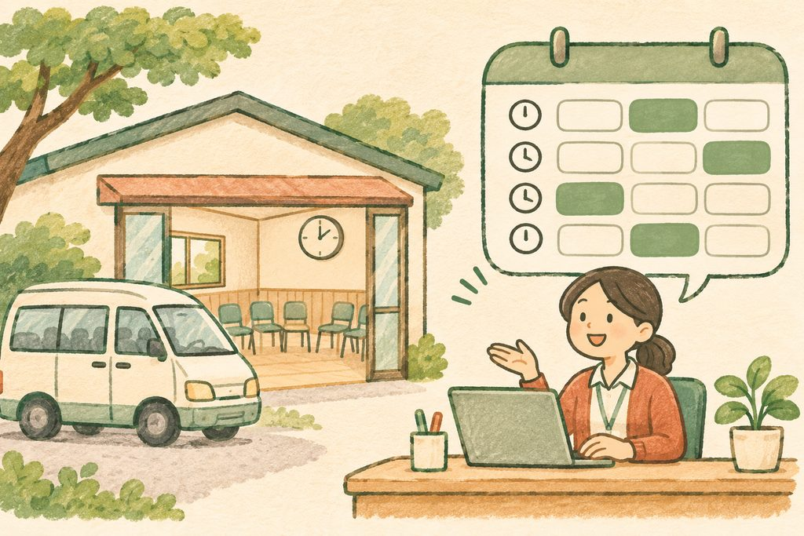

일정의 성격을 나눕니다
개인 업무, 팀 공지, 프로그램 운영처럼 목적에 따라 캘린더를 구분하세요. 왼쪽 목록의 체크를 켜고 끄면 필요한 일정만 화면에 겹쳐 볼 수 있습니다.
나의 할 일부터 팀의 회의, 차량과 공간 예약까지.
구글 캘린더를 곁에 두고, 서로의 시간을
조금 더 편하게 맞춰 보세요.
01 나의 하루부터 차근차근
일정을 머릿속에만 두지 않고 캘린더에 올려 놓으면, 내가 할 일과 함께할 일을 한눈에 볼 수 있습니다.
상담, 방문, 회의, 프로그램 준비 시간을 모두 기록해 보세요. 팀이 같이 보는 캘린더를 만들면 서로 묻지 않고도 일정을 확인할 수 있습니다. 회의실과 차량 같은 공용 자원을 예약하는 일도 캘린더에서 이어집니다.
개인 업무, 팀 공지, 프로그램 운영처럼 목적에 따라 캘린더를 구분하세요. 왼쪽 목록의 체크를 켜고 끄면 필요한 일정만 화면에 겹쳐 볼 수 있습니다.
회의 일정의 설명에 안건과 준비물을 적고, 첨부 기능으로 드라이브 문서를 연결하세요. 날짜·장소·자료를 같은 일정에서 찾을 수 있습니다.
빠르게 입력할 때는 제목 칸에 업무 이름부터 적으세요. 날짜나 시간을 글자로 함께 입력하더라도, 저장 전에 화면에 반영된 날짜와 시간을 꼭 읽어 보세요.
03 가장 중요한 구분
일정을 저장할 때 어느 캘린더에 넣느냐가 공개 범위를 가릅니다. 나만 볼 업무는 공유하지 않은 개인 캘린더에, 팀에 알릴 업무는 팀 캘린더에 넣으세요. 개인 캘린더도 이미 공유했다면 그 권한에 따라 다른 사람이 볼 수 있습니다.
팀 캘린더에 보인다는 이유만으로 팀원 모두가 참석자가 되지는 않습니다. 차량 동행이나 회의 참석이 필요한 사람은 따로 초대하세요. 초대 메일이 보이지 않으면 먼저 스팸함을 확인합니다.
일정이나 초대 메일을 열어 예·아니요·미정 가운데 하나를 고르세요. 필요하면 응답 메모에 참석이 어려운 이유나 전달할 사항을 남깁니다. 참석자에 팀 그룹 주소를 넣는 방식도 가능합니다. 팀별 그룹은 관리자가 미리 만들어 두어야 하며, 초대할 수 있는 그룹과 구성원 범위는 그룹 설정을 따릅니다.
참석자 시간 옆의 노란 느낌표는 이미 일정이 있다는 주의 표시입니다. 저장을 막는 표시는 아닙니다. 저장하기 전에 실제로 참석 가능한지는 당사자와 확인하세요.
계정에 부재중 기능이 있다면 휴가·출장 시간대를 부재중으로 등록할 수 있습니다. 해당 시간의 회의 초대를 자동으로 거절하도록 설정하고, 거절할 대상과 응답 문구를 확인하세요.
04 필요한 만큼만 함께 보기
강의에서 다룬 네 가지 핵심 권한을 낮은 범위부터 살펴보세요. 함께 일정을 등록하고 고쳐야 하는 팀원에게는 보통 변경 권한을 줍니다. 다른 사람에게 공유할 수 있는 관리 권한은 꼭 필요한 담당자에게만 줍니다.
05 사물을 예약할 때
승합차나 강당은 리소스, 즉 함께 쓰는 자원으로 등록합니다. 직원이 일반 캘린더 이름만 차량으로 바꾸는 방식과는 다릅니다. 먼저 관리자가 관리 콘솔에서 건물과 리소스를 등록해야 합니다.

이미 잡힌 시간은 예약 가능한 시간으로 생각하면 안 됩니다. 사람의 일정 옆에 뜨는 겹침 주의 표시와 자원의 예약 거절은 다르므로, 저장 버튼만 누르고 예약이 끝났다고 판단하지 마세요.
06 사람의 시간을 신청받을 때
외부 사람에게 상담이나 보강 시간을 신청받을 때는 약속 일정을 사용합니다. 예약 가능한 시간만 보여 주는 페이지를 만들고, 신청자에게 링크를 보내거나 홈페이지에 연결합니다.
연습용 예시 · 오후 상담 · 한 번에 30분
빈 시간 버튼을 누르면 예약된 시간으로 바뀝니다.
07 열기 쉬워야 자주 쓰게 됩니다
캘린더는 특별한 날에만 여는 도구가 아닙니다. 자주 일하는 화면 옆에 두고, 확인하고 기록하는 동작을 짧게 만들어 보세요.
지메일·드라이브·시트 오른쪽 패널의 캘린더 아이콘을 누르면 작업 중에도 일정을 확인할 수 있습니다. 패널이 접혀 있으면 오른쪽 아래의 패널 표시 버튼부터 찾아보세요.
브라우저의 설치 기능으로 캘린더 페이지를 앱처럼 설치한 뒤 작업 표시줄에 고정할 수 있습니다. 설치 메뉴는 브라우저에 따라 다르게 보입니다. 윈도우에서는 윈도우 + 숫자로 작업 표시줄의 해당 위치 앱을 열거나 전환할 수 있습니다. 예를 들어 세 번째 위치라면 숫자 3을 누릅니다.
캘린더를 보여 주는 확장 프로그램을 쓰면 다른 화면에서도 버튼 하나로 일정을 볼 수 있습니다. 브라우저의 확장 프로그램 관리 화면에서 단축키를 지정할 수 있는지도 확인하세요. 기관에서 승인한 도구를 사용하고, 관리자가 기관 전체에 설치하도록 배포할 수도 있습니다.
“제가 그랬잖아요. 마우스는 죄악이라고.”강의 중 표현 · 반복하는 동작을 줄여 보자는 뜻입니다.
일·주·월·일정 목록 가운데 내 업무에 맞는 보기를 고르세요. 캘린더 설정에서 단축키 사용을 켠 뒤, 입력 칸 밖에서 다음 키를 눌러 봅니다. 화면을 바꾸려면 키보드를, 일정 시간대를 잡거나 옮길 때는 드래그를 활용할 수 있습니다. 옮긴 뒤에는 바뀐 날짜와 시간을 확인하세요.
실제 단축키: D 일 보기, W 주 보기, M 월 보기, T 오늘로 이동. 글자를 입력 중일 때는 먼저 입력 칸에서 나오세요.
매주 열리는 회의라면 일정의 반복 설정을 열어 반복 주기와 요일을 정하세요. 필요한 경우 맞춤 반복에서 횟수 또는 종료 날짜를 지정합니다. 공휴일 때문에 하루만 쉬려면 해당 회차를 삭제하며 이 일정만을 선택하세요. 이후 일정이나 모든 일정을 고르면 삭제 범위가 넓어집니다.
할 일에는 보고서 제출, 물품 확인처럼 해야 할 업무를 적습니다. 날짜를 지정해 캘린더에서 확인하고, 목록을 ‘행정 업무’와 ‘프로그램 준비’처럼 나누어 관리하세요. 끝낸 업무는 완료로 표시합니다.
공휴일처럼 이미 공개된 외부 캘린더는 다른 캘린더 ＋의 관심분야 캘린더 탐색이나 제공받은 캘린더 주소 추가 기능으로 내 화면에 더할 수 있습니다. 읽기용 캘린더를 구독한 경우 원본 일정은 수정할 수 없습니다. 캘린더 이름 앞에 ‘01’, ‘02’처럼 숫자를 붙여 목록 순서를 정리할 수도 있습니다.
08 현장에서 함께 나눈 질문
막혔던 순간의 질문을 다시 모았습니다. 질문을 누르면 답을 볼 수 있습니다.
추가는 됩니다. 그 사람에게 이미 일정이 있다는 주의 표시일 뿐, 저장을 막지는 않습니다. 실제 참석 가능한 시간인지 확인한 뒤 초대하세요.
빼고 싶은 날짜의 일정을 열어 삭제하세요. ‘이 일정만 / 이후 일정 / 모든 일정’ 가운데 이 일정만을 고릅니다. 공휴일 하루의 회의를 뺄 때도 같은 방식입니다.
컴퓨터에서 캘린더의 톱니바퀴(설정) › 휴지통을 열고 해당 일정을 찾아 복원할 수 있습니다. 휴지통에 표시되는 일정과 복원 가능 여부는 캘린더의 권한에 따라 다를 수 있습니다.
네. 참석자에 팀 그룹을 넣으면 그룹 구성원을 함께 초대할 수 있습니다. 팀별 그룹은 관리자가 미리 만들어 두어야 합니다. 그룹의 초대·구성원 공개 설정에 따라 동작이 달라질 수 있으니 필요한 경우 관리자에게 확인하세요.
캘린더 이름 앞에 숫자를 붙여 정리하세요. 예를 들어 ‘01 팀 일정’, ‘02 프로그램 운영’, ‘03 상담 예약’처럼 같은 자릿수로 붙이면 그 순서로 찾기 편합니다.
09 세 가지 질문으로 복습
정답을 외우기보다, 왜 그 기능을 쓰는지 생각하며 골라 보세요. 답을 확인하면 해설이 함께 나옵니다.
10 배운 것을 내 업무로
모두 한 번에 바꾸지 않아도 괜찮습니다. 내 일정 하나를 적고, 팀과 함께할 일정 하나를 나누는 것부터 시작해 보세요.
체크 상태는 이 브라우저에 저장됩니다.
일정을 함께 보면,
서로의 하루를 조금 더 배려할 수 있습니다.
강의 원고와 현장 질문을 바탕으로 구성했습니다. ‘보충’은 추가 실무 안내입니다. 메뉴 이름과 이용 가능한 기능은 계정·관리자 설정에 따라 다를 수 있습니다.